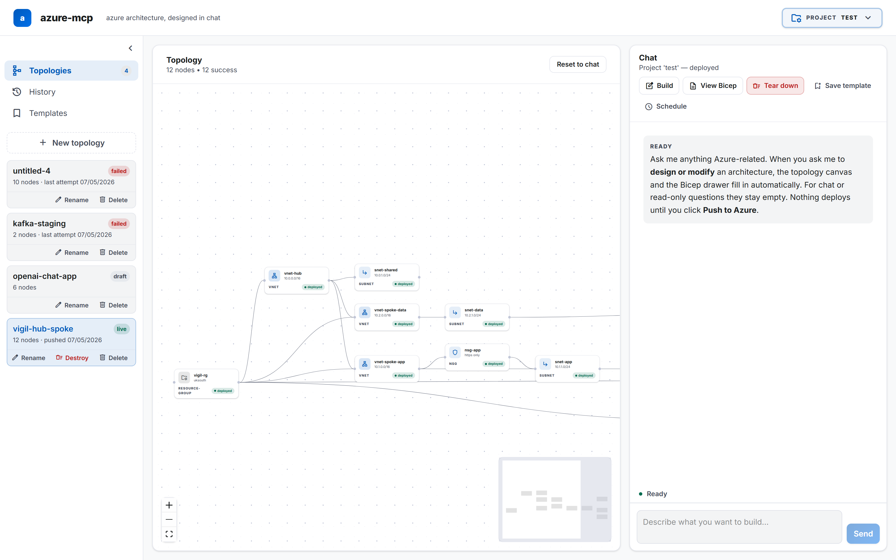
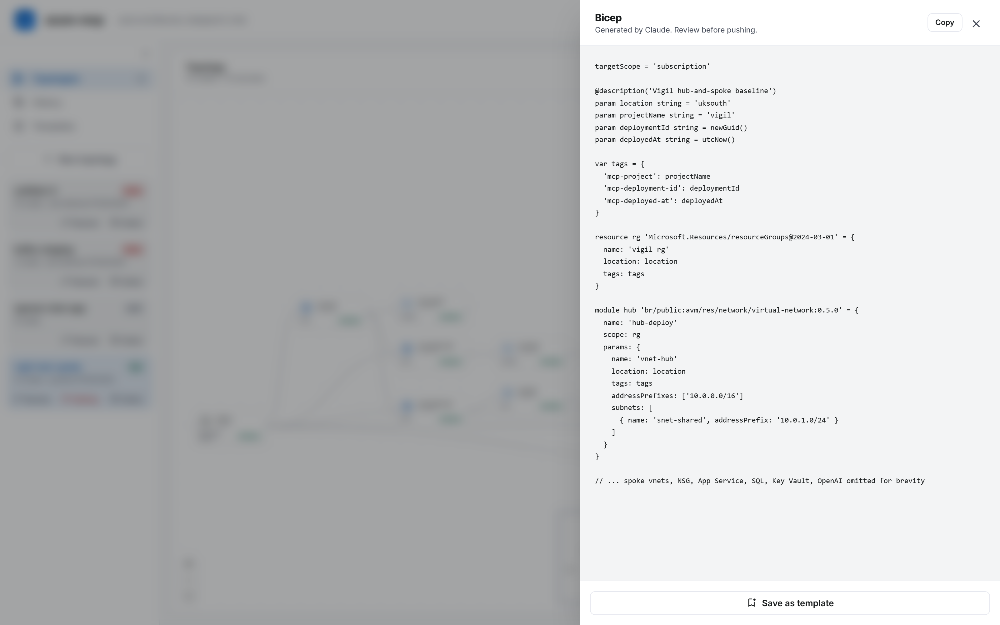
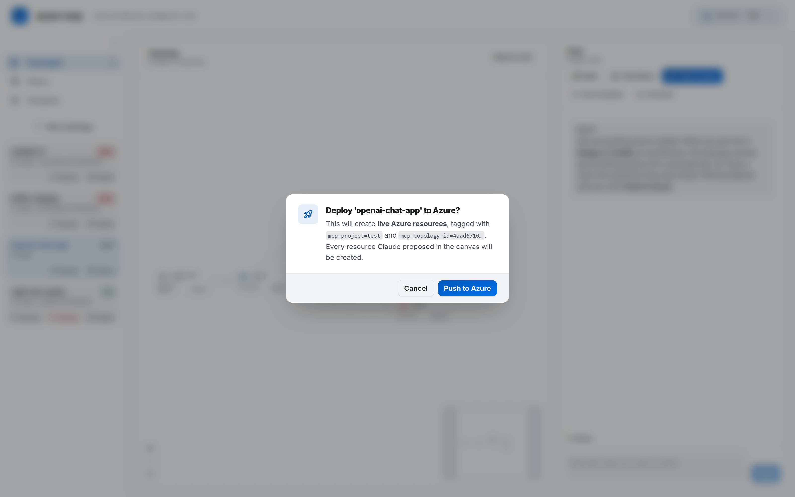
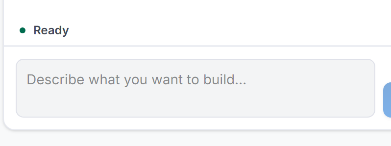
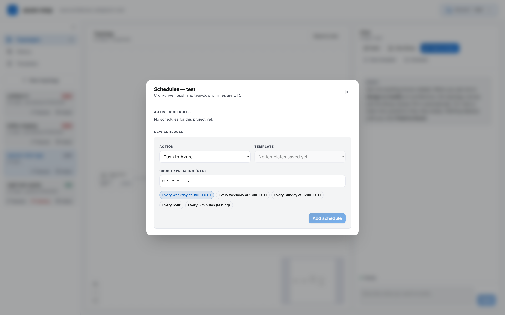

A single-operator workspace that turns a sentence into a topology, a topology into a reviewed template, and a template into a deployed cloud — Azure or AWS — in one streaming chat with Claude.
Bicep is great. CloudFormation is great. But neither was designed for a human to talk to — and neither was designed to stay alive after the resources are deployed.
The reality: 200+ lines of YAML or Bicep, a fight with the schema, a portal tab open in the background to copy resource IDs. Architects shouldn't be transcribing JSON.
After two iterations and a rename, you have no clean way to find your own resources, no way to tear down just this deployment, no canvas of what's running. Cloud consoles forget you the moment you log out.
Demo labs, training environments, weekend builds — they want a schedule. Today that means a runbook, a pipeline, a service account, and an evening of YAML. It shouldn't.
Type a sentence in the chat. Claude proposes the architecture as structured markers, the canvas auto-lays-out, the Bicep
drops into a side drawer, and the stage bar offers Push to Azure.
vigil-lab.uksouth.
One Standard_B2s VM on a 10.20.0.0/16 VNet, plus an Azure SQL DB on the
Basic tier. Bicep is in the drawer — push when ready.
A two-pane workspace fronted by a collapsible left rail. Designed to live on a monitor all day, not be opened-and-closed.


Every response is parsed mid-stream for structured markers. Topology, Bicep template, and clarifying answers all render in real-time as Claude reasons through the design.
<topology>, <bicep>, <answers> — stripped from chat, hydrated into canvas + drawer.validate_bicep tool catches syntax errors before the human ever sees the drawer.A custom deploy_bicep tool spawns Microsoft's official azure-cli container with your service principal, runs az deployment, and pipes every line back to the chat as it happens.
mcp-project and mcp-topology-id tags via az tag update --operation Merge. Bicep can forget them; we still find every resource.

A live row above the composer surfaces the current operation — calling tool, reasoning, writing — with elapsed time. No more "is it stuck?" moments during long tool chains.
A top-level toggle swaps the entire tool surface — system prompt, MCP server, deployment engine, icon set, theme. Build a stack in Azure. Build the same stack in AWS. Same chat. Same canvas.
mcr.microsoft.com/azure-sdk/azure-mcpBicep (multi-file, modules, validation)az deployment sub createawslabs/cfn-mcp-serverCloudFormation (YAML / JSON)aws cloudformation deployEvery turn happens in one of five explicit stages, told to Claude in a per-request system block (after the cache breakpoint, so changing stage doesn't invalidate the cached prefix).
Propose architecture. Inspection tools only.
Review the proposal. Read-only tools.
Execute the deploy. Mutating tools unlocked.
Tag-filtered destruction of project resources.
Ad-hoc questions outside the lifecycle.
Schedules target a saved template. When a cron fires, the same agentic chat loop runs headless against Claude — non-streaming, but the same tools, the same system prompt, the same prompt cache.
node-cron in-process; re-loaded on every schedule CRUD.
The backend doesn't talk to the clouds directly. It runs an agentic loop against Claude with two MCP servers and two shell-out custom tools registered as the action surface.
Azure (Bicep) and AWS (CloudFormation), same chat, same canvas, same lifecycle.
Microsoft Azure MCP + AWS Labs MCP + custom deploy_* / destroy_*. All prompt-cached.
Build, View, Push, Teardown, Free. Tool-gated by prompt, enforced by the loop.
User-driven chat and cron-driven schedules share the same agentic loop. No second engine.
No experimental dependencies in the load-bearing parts. The shape of the work is what's novel — the parts are well-known.
Designed and built end-to-end. The schema, the agentic loop, the lifecycle UI, the deployment engine, the scheduler, both clouds. One operator, one workspace, one chat.